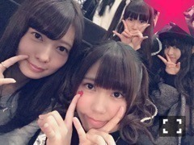
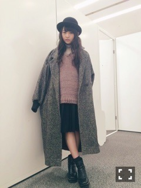
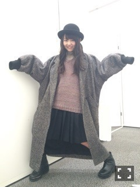

| 2015/01 12 Mon | 8時のアネモネ。621 回目 |
1stアルバム「透明な色」
絶賛発売中！
6日のお渡し会で、
なんと新星堂チームが優勝しました。
とても嬉しかったです！
雨の中並んでくださったみなさん
ありがとうございました。
特典のノート大切に使ってね。
お店をちらっと覗いたら
大きく乃木坂46を
宣伝してくださってて
本当に嬉しかったです。
新星堂さんありがとうございます！
渋谷TSUTAYAも凄いことになってる
みなさんは見に行ったかな？

メンバー何人かで訪問しました。
サイン書きました。
前髪の跳ね具合がすごい。
こんな素敵なポップがありました。
自分の印象がこうなのかなと
思ったら嬉しくなったし、
とことん極めたいなあ
全員分も書いてくださって...
あーありがたや〜ありがたや〜
(ひじ神様風)
乃木坂駅にも
たくさんのパネルが飾ってあります！

今年の個人初仕事が
NewEraさんの撮影でした！
美彩と一緒に。
そして、発売中のCUTiEで
アルバムについて語っています。
飛鳥表紙が目印！
昨日はある撮影をしたのだけど、
嬉しいことがたくさんありました。
頭の中でいろいろ計画中です。
お楽しみにしててね〜

そして、仕事終わりに
BABYMETALのライブ行ってきた！
圧倒されて目が乾いて
終始目薬を差したところ
日芽香に見られてしまったよ
また観に行きたい

used重たいコート
NewEraのポーラーハット
プリーツスカート
いただいた帽子をさっそくかぶる。
セールには行ってないけど、
買い物してきたよー
まだまだ寒いけど、
冬服はもうお腹いっぱいかな。

ポーズとったら優里に
ナイトメアビフォアクリスマスの
ブギーみたいと言われた。
新成人のみなさん
おめでとうございます！
私は来年です。
なんだか今からドキドキしてます。
まりか
コメント(660)
2015/01/12 20:54